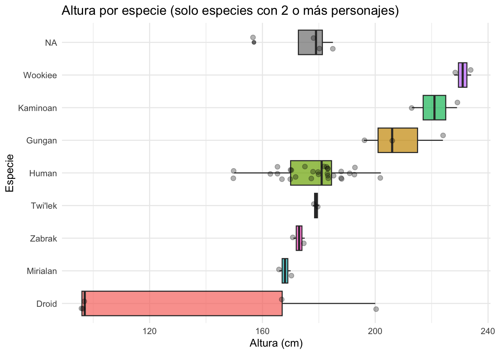
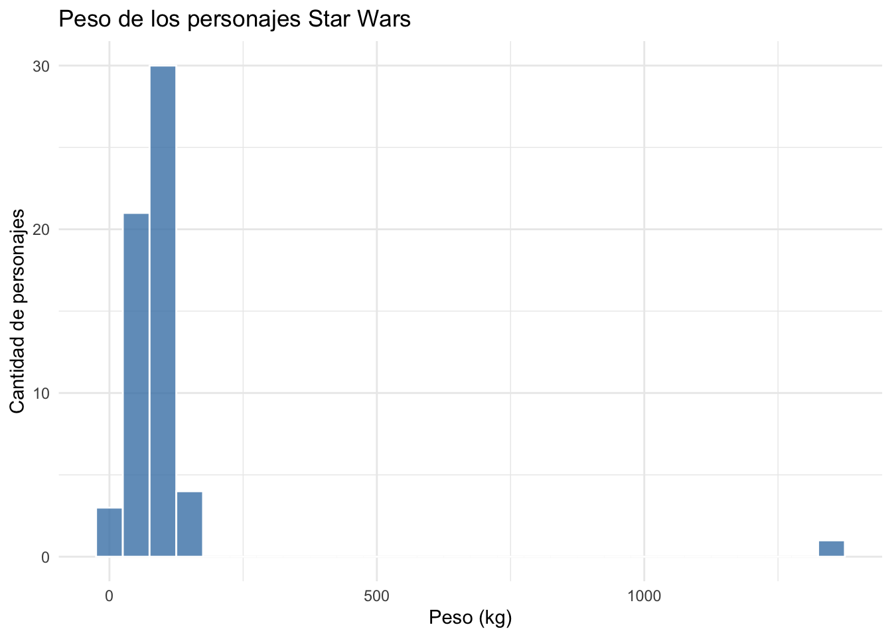
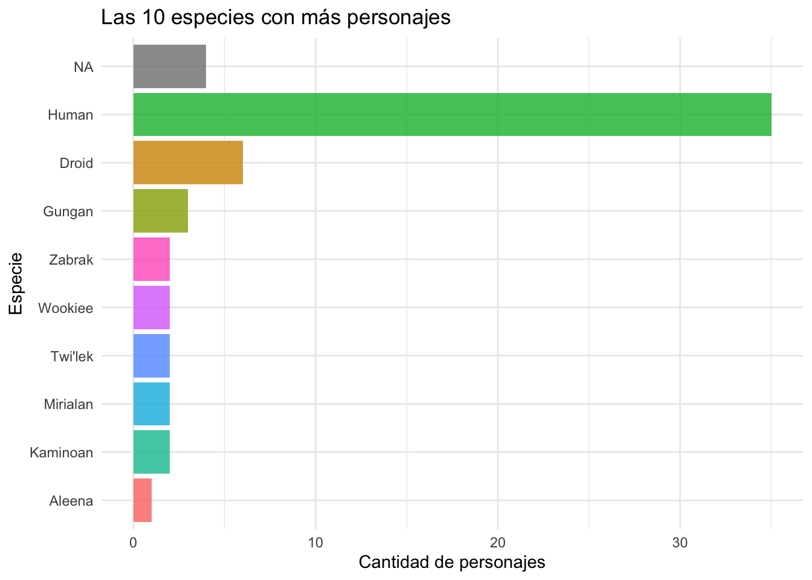
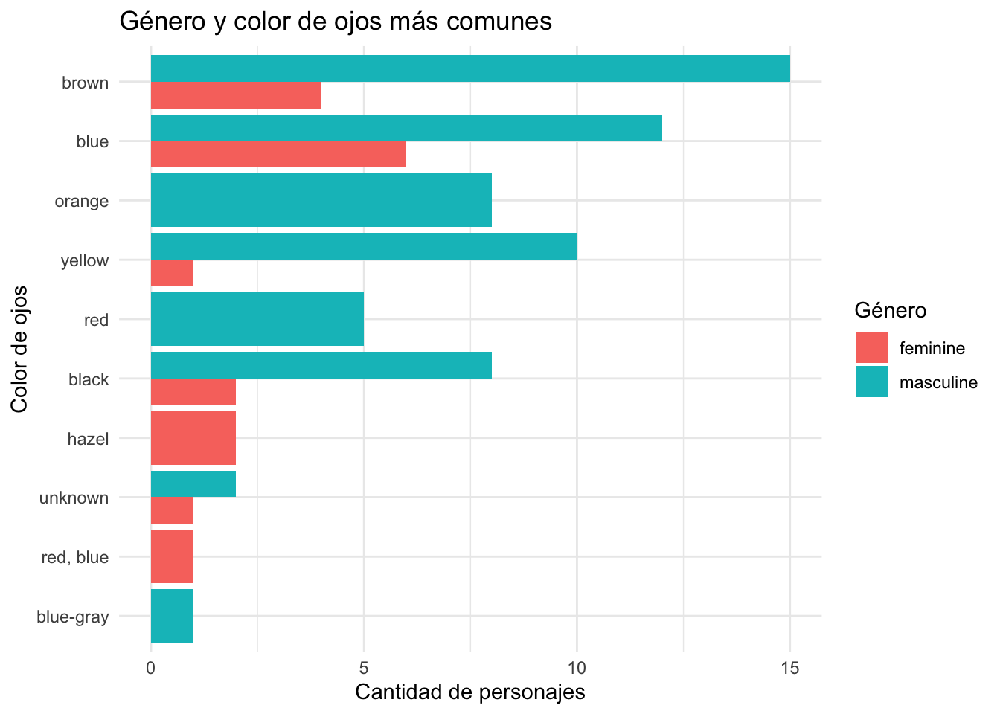

library(tidyverse)
starwars <- starwarsSesión 4: Análisis Exploratorio de Datos
Combinando dplyr y ggplot2 para investigar datos
Introducción
En las sesiones anteriores aprendimos dplyr (para trabajar con datos) y ggplot2 (para hacer gráficos). Hoy vamos a mezclar estas dos herramientas para hacer un Análisis Exploratorio de Datos, que en inglés se llama EDA.
Objetivos de la sesión
Al finalizar vas a poder:
- Entender qué es un EDA y por qué es útil.
- Hacer preguntas sencillas sobre tus datos.
- Usar dplyr para obtener números que respondan esas preguntas.
- Crear gráficos con ggplot2 que muestren lo que hay en los datos.
- Sacar conclusiones y pensar en nuevas preguntas.
0. Preparación
Cargar paquetes y datos
Para esta sesión usaremos el paquete tidyverse (que trae dplyr y ggplot2) y los datos de Star Wars — información de personajes de la saga.
Si ya tienes tidyverse cargado, starwars viene incluido. Si no, instala con:
install.packages("tidyverse")1. ¿Qué es un Análisis Exploratorio de Datos?
EDA es una forma de investigar un conjunto de datos para:
- Entender de qué trata y cómo está organizado
- Encontrar patrones, cosas raras o fuera de lo común
- Ver si hay relaciones entre las columnas
- Tener ideas para análisis más adelante
Es como ser detective: haces preguntas, buscas pistas (números y gráficos), y sacas conclusiones.
Important¿Para qué sirve el EDA?
Si no exploras primero, podrías usar fórmulas o modelos sin entender bien los datos, y cometer errores. Hacer EDA evita sorpresas después.
2. Conociendo los datos
Antes de responder preguntas, necesitamos saber qué tenemos.
2.1 Estructura básica
glimpse(starwars)Rows: 87
Columns: 14
$ name <chr> "Luke Skywalker", "C-3PO", "R2-D2", "Darth Vader", "Leia Or…
$ height <int> 172, 167, 96, 202, 150, 178, 165, 97, 183, 182, 188, 180, 2…
$ mass <dbl> 77.0, 75.0, 32.0, 136.0, 49.0, 120.0, 75.0, 32.0, 84.0, 77.…
$ hair_color <chr> "blond", NA, NA, "none", "brown", "brown, grey", "brown", N…
$ skin_color <chr> "fair", "gold", "white, blue", "white", "light", "light", "…
$ eye_color <chr> "blue", "yellow", "red", "yellow", "brown", "blue", "blue",…
$ birth_year <dbl> 19.0, 112.0, 33.0, 41.9, 19.0, 52.0, 47.0, NA, 24.0, 57.0, …
$ sex <chr> "male", "none", "none", "male", "female", "male", "female",…
$ gender <chr> "masculine", "masculine", "masculine", "masculine", "femini…
$ homeworld <chr> "Tatooine", "Tatooine", "Naboo", "Tatooine", "Alderaan", "T…
$ species <chr> "Human", "Droid", "Droid", "Human", "Human", "Human", "Huma…
$ films <list> <"A New Hope", "The Empire Strikes Back", "Return of the J…
$ vehicles <list> <"Snowspeeder", "Imperial Speeder Bike">, <>, <>, <>, "Imp…
$ starships <list> <"X-wing", "Imperial shuttle">, <>, <>, "TIE Advanced x1",…nrow(starwars) # cuántas filas (personajes)[1] 87ncol(starwars) # cuántas columnas (variables)[1] 14Pregunta: ¿Cuántos personajes hay? ¿Cuántos datos se guardan de cada uno?
2.2 Las columnas
| Columna | Qué significa |
|---|---|
name |
Nombre del personaje |
height |
Altura en centímetros |
mass |
Peso en kilogramos |
hair_color |
Color de cabello |
skin_color |
Color de piel |
eye_color |
Color de ojos |
birth_year |
Año de nacimiento |
sex |
Sexo del personaje |
gender |
Género |
homeworld |
Planeta de origen |
species |
Especie |
films |
Películas en que aparece |
2.3 Resumen rápido
starwars tiene algunas columnas que guardan listas (films, vehicles, starships), y si usamos summary() con todo, el resultado se vuelve gigante y difícil de leer. Por eso, primero elegimos las columnas que vamos a usar:
proc_starwars <- starwars |>
select(name, height, mass, hair_color, skin_color, eye_color,
birth_year, sex, gender, homeworld, species)
summary(proc_starwars) name height mass hair_color skin_color
Length :87 Min. : 66.0 Min. : 15.00 Length :87 Length :87
N.unique :87 1st Qu.:167.0 1st Qu.: 55.60 N.unique :11 N.unique :31
N.blank : 0 Median :180.0 Median : 79.00 N.blank : 0 N.blank : 0
Min.nchar: 3 Mean :174.6 Mean : 97.31 Min.nchar: 4 Min.nchar: 3
Max.nchar:21 3rd Qu.:191.0 3rd Qu.: 84.50 Max.nchar:13 Max.nchar:19
Max. :264.0 Max. :1358.00 NAs : 5
NAs :6 NAs :28
eye_color birth_year sex gender homeworld
Length :87 Min. : 8.00 Length :87 Length :87 Length :87
N.unique :15 1st Qu.: 35.00 N.unique : 4 N.unique : 2 N.unique :48
N.blank : 0 Median : 52.00 N.blank : 0 N.blank : 0 N.blank : 0
Min.nchar: 3 Mean : 87.57 Min.nchar: 4 Min.nchar: 8 Min.nchar: 4
Max.nchar:13 3rd Qu.: 72.00 Max.nchar:14 Max.nchar: 9 Max.nchar:14
Max. :896.00 NAs : 4 NAs : 4 NAs :10
NAs :44
species
Length :87
N.unique :37
N.blank : 0
Min.nchar: 3
Max.nchar:14
NAs : 4
Note¿Por qué pasa esto con
films, vehicles y starships?
Estas columnas tienen listas: cada celda puede tener varios valores (por ejemplo, un personaje puede aparecer en 3 películas). summary() no sabe cómo resumir eso fácilmente, así que por ahora las dejamos fuera.
NoteTipos de datos
Este dataset tiene datos numéricos (height, mass, birth_year) y datos de texto (species, homeworld, gender). Sirve para practicar con tipos diferentes de información.
3. Haciendo preguntas con dplyr
Lo importante del EDA es hacer preguntas y usar dplyr para obtener respuestas con números.
3.1 Pregunta 1: ¿Cuántos personajes hay por especie?
proc_starwars |>
group_by(species) |>
summarise(
cantidad = n(),
porcentaje = round(n() / nrow(starwars) * 100, 1)
) |>
arrange(desc(cantidad))# A tibble: 38 × 3
species cantidad porcentaje
<chr> <int> <dbl>
1 Human 35 40.2
2 Droid 6 6.9
3 <NA> 4 4.6
4 Gungan 3 3.4
5 Kaminoan 2 2.3
6 Mirialan 2 2.3
7 Twi'lek 2 2.3
8 Wookiee 2 2.3
9 Zabrak 2 2.3
10 Aleena 1 1.1
# ℹ 28 more rowsResultado: Los humanos son la mayoría (35%), pero hay muchas especies diferentes. Algunas tienen solo 1 o 2 personajes.
3.2 Pregunta 2: ¿Cuánto miden en promedio por especie?
proc_starwars |>
group_by(species) |>
summarise(
altura_promedio = mean(height, na.rm = TRUE),
altura_min = min(height, na.rm = TRUE),
altura_max = max(height, na.rm = TRUE),
n = n()
) |>
arrange(desc(altura_promedio))# A tibble: 38 × 5
species altura_promedio altura_min altura_max n
<chr> <dbl> <int> <int> <int>
1 Quermian 264 264 264 1
2 Wookiee 231 228 234 2
3 Kaminoan 221 213 229 2
4 Kaleesh 216 216 216 1
5 Gungan 209. 196 224 3
6 Pau'an 206 206 206 1
7 Besalisk 198 198 198 1
8 Cerean 198 198 198 1
9 Chagrian 196 196 196 1
10 Nautolan 196 196 196 1
# ℹ 28 more rowsResultado: Hay diferencias enormes entre especies. Los Wookiees son muy altos; los Ewoks son bajitos. Los humanos están en el medio.
3.3 Pregunta 3: ¿Quiénes son los más pesados?
proc_starwars |>
arrange(desc(mass)) |>
select(name, species, height, mass, homeworld) |>
head(10)# A tibble: 10 × 5
name species height mass homeworld
<chr> <chr> <int> <dbl> <chr>
1 Jabba Desilijic Tiure Hutt 175 1358 Nal Hutta
2 Grievous Kaleesh 216 159 Kalee
3 IG-88 Droid 200 140 <NA>
4 Darth Vader Human 202 136 Tatooine
5 Tarfful Wookiee 234 136 Kashyyyk
6 Owen Lars Human 178 120 Tatooine
7 Bossk Trandoshan 190 113 Trandosha
8 Chewbacca Wookiee 228 112 Kashyyyk
9 Jek Tono Porkins <NA> 180 110 Bestine IV
10 Dexter Jettster Besalisk 198 102 Ojom Resultado: Jabba the Hutt pesa 1358 kg, un número muy alto. Hay valores que se salen de lo normal.
3.4 Pregunta 4: ¿La altura y el peso están relacionados?
proc_starwars |>
group_by(species) |>
summarise(
altura_promedio = mean(height, na.rm = TRUE),
peso_promedio = mean(mass, na.rm = TRUE),
n = n()
) |>
filter(n >= 2) |>
arrange(desc(altura_promedio))# A tibble: 9 × 4
species altura_promedio peso_promedio n
<chr> <dbl> <dbl> <int>
1 Wookiee 231 124 2
2 Kaminoan 221 88 2
3 Gungan 209. 74 3
4 Twi'lek 179 55 2
5 Human 178 81.3 35
6 <NA> 175 81 4
7 Zabrak 173 80 2
8 Mirialan 168 53.1 2
9 Droid 131. 69.8 6Resultado: En general, las especies más altas tienden a ser más pesadas, pero hay excepciones.
4. Visualizando con ggplot2
Los números ayudan, pero los gráficos hacen que sea más fácil ver los patrones. Vamos a dibujar lo que descubrimos.
4.1 Gráfico 1: Altura por especie
proc_starwars |>
group_by(species) |>
filter(n() >= 2) |>
ungroup() |>
ggplot(aes(x = fct_reorder(species, height, .fun = median), y = height, fill = species)) +
geom_boxplot(alpha = 0.7) +
geom_jitter(width = 0.2, alpha = 0.3, size = 2) +
coord_flip() +
labs(
title = "Altura por especie (solo especies con 2 o más personajes)",
x = "Especie",
y = "Altura (cm)",
fill = "Especie"
) +
theme_minimal() +
theme(legend.position = "none")
Cómo leerlo: - La caja es donde está la mitad de los personajes - La línea de en medio es la mediana (el valor del centro) - Los puntos son personajes sueltos - Los Wookiees son muy altos, los Ewoks son bajitos
4.2 Gráfico 2: Distribución del peso (histograma)
proc_starwars |>
filter(!is.na(mass)) |>
ggplot(aes(x = mass)) +
geom_histogram(binwidth = 50, fill = "steelblue", color = "white", alpha = 0.8) +
labs(
title = "Peso de los personajes Star Wars",
x = "Peso (kg)",
y = "Cantidad de personajes"
) +
theme_minimal()
Cómo leerlo: - La mayoría de los personajes pesan entre 50 y 100 kg - Hay una barra separada a la derecha: es Jabba the Hutt (1358 kg), un peso muy fuera de lo normal - La mayoría se concentra a la izquierda
4.3 Gráfico 3: ¿Qué especie tiene más personajes?
proc_starwars |>
count(species) |>
arrange(desc(n)) |>
head(10) |>
ggplot(aes(x = reorder(species, n), y = n, fill = species)) +
geom_col(alpha = 0.8) +
coord_flip() +
labs(
title = "Las 10 especies con más personajes",
x = "Especie",
y = "Cantidad de personajes",
fill = "Especie"
) +
theme_minimal() +
theme(legend.position = "none")
Cómo leerlo: - Los humanos son la mayoría (el 35% de todos los personajes) - Las demás especies tienen muchos menos representantes
4.4 Gráfico 4: Color de ojos por género
proc_starwars |>
filter(!is.na(gender), !is.na(eye_color)) |>
count(gender, eye_color) |>
arrange(desc(n)) |>
head(15) |>
ggplot(aes(x = reorder(eye_color, n), y = n, fill = gender)) +
geom_col(position = "dodge") +
coord_flip() +
labs(
title = "Género y color de ojos más comunes",
x = "Color de ojos",
y = "Cantidad de personajes",
fill = "Género"
) +
theme_minimal()
Cómo leerlo: - El marrón es el color de ojos más común - Se puede ver cómo se reparten los colores según el género
5. Lo que aprendimos
Después de hacer preguntas con dplyr y ver gráficos con ggplot2, esto es lo que descubrimos:
NoteSobre los datos de Star Wars
- Los humanos son la mayoría: el 35% de todos los personajes
- Hay mucha variedad de especies: desde Wookiees muy altos hasta Ewoks muy bajitos
- El peso se concentra entre 50 y 100 kg para la mayoría
- Algunos valores son muy diferentes al resto (como Jabba the Hutt con 1358 kg)
- Pocas especies tienen varios personajes: la mayoría solo tiene 1 o 2
Preguntas nuevas que nos quedan:
- ¿Por qué hay personajes con pesos tan extremos?
- ¿Hay relación entre especie y planeta de origen?
- ¿Los personajes de películas viejas son diferentes a los de las nuevas?
- ¿Qué colores de ojos son más comunes en cada especie?
6. Ejercicios para ti
TipEjercicio 1: Usando dplyr
¿Cuánto miden en promedio los personajes según su género (variable
gender)?¿Qué planeta tiene más personajes?
TipEjercicio 2: Haciendo gráficos
Haz un boxplot que compare el peso por género.
Haz un histograma de la altura (
height) de los personajes.
Código de los ejercicios
7. Funciones que usamos hoy
| Función | De qué sirve | Ejemplo |
|---|---|---|
glimpse() |
Ver la estructura de los datos | glimpse(starwars) |
filter() |
Quedarse con filas que cumplen una condición | filter(species == "Human") |
group_by() |
Agrupar datos por una columna | group_by(species) |
summarise() |
Calcular resúmenes por grupo | summarise(media = mean(height)) |
count() |
Contar casos por grupo | count(homeworld) |
arrange() |
Ordenar las filas | arrange(desc(mass)) |
select() |
Elegir qué columnas ver | select(name, height) |
ggplot() |
Empezar un gráfico | ggplot(aes(x, y)) |
geom_histogram() |
Histograma | geom_histogram(binwidth = 50) |
geom_boxplot() |
Diagrama de caja | geom_boxplot() |
geom_col() |
Gráfico de barras | geom_col() |
coord_flip() |
Girar el gráfico (para leer mejor) | coord_flip() |
labs() |
Poner títulos y etiquetas | labs(title = "...") |
theme_minimal() |
Tema limpio y sencillo | theme_minimal() |
8. Reflexión final
Hoy combinamos dplyr y ggplot2 para investigar datos de forma sencilla:
- Hicimos preguntas sobre los datos
- Usamos dplyr para obtener respuestas con números
- Creamos gráficos para ver los patrones
- Sacamos conclusiones y pensamos en más preguntas
Eso es EDA: un ciclo de curiosidad, búsqueda y descubrimiento.
9. Para la próxima sesión
Ya sabemos explorar y visualizar datos. Ahora falta:
- Asociación entre variables (¿cómo se relacionan dos variables?)
No olvides la pregunta! Nos vemos en la siguiente sesión